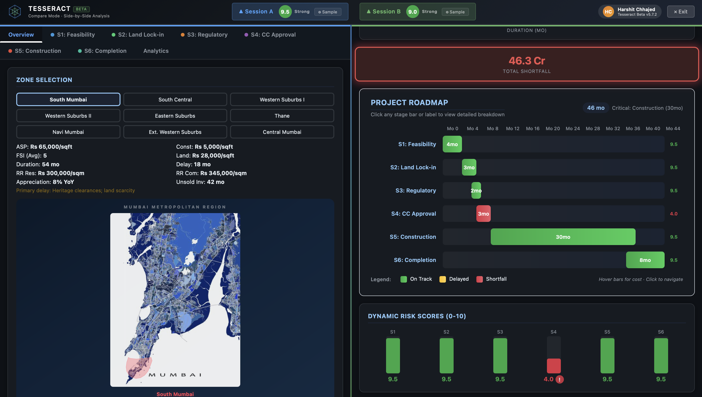

A digital twin that models the complete 6-stage Mumbai development lifecycle, from feasibility through completion, with zone-aware costing, regulatory intelligence, and dynamic execution-risk scoring. Built on data from MahaRERA, Knight Frank, CBRE, JLL, and Anarock, calibrated across 9 zones and 405 decision variables.
View Build Log →
Every Mumbai development project passes through six critical gates. The Twin models each one with zone-specific costs, regulatory logic, and capital chain analysis.
Every feature is calibrated against real project data and Mumbai's specific regulatory environment.
Zones with calibrated ASP ranges (₹18,000–70,000/sqft), construction cost benchmarks, FSI regulations, and Ready Reckoner rates sourced from MahaRERA, IGR Maharashtra, and industry reports.
DCPR 2034-compliant FSI calculator with road width, zone, and project type inputs. Models fungible FSI (35% of base), TDR acquisition costs, and BMC premium financing across four payment schemes.
Left-to-right capital consumption: Equity (first draw) → Debt (18% p.a.) → Pre-sales (70% RERA escrow) → Bridge financing (20% penalty). Automatic shortfall detection with visual alerts.
Run two fully independent scenarios side-by-side with iframe isolation architecture. Real-time composite risk score gauges, persistent session state, and synchronized dark mode across panes.
Per-stage success metrics with composite ratings and shortfall detection. Every variable feeds a risk score that updates in real-time as you change assumptions, with no waiting for recalculation.
Single-file HTML dashboard (266KB) works on airplanes, USB drives, or shared servers. Optional backend API with graceful degradation. Zero dependencies, zero setup.
Request a walkthrough of the Twin platform or explore the full build log.